Fomento Cultural Banamex
Grandes Maestros del Arte Popular Mexicano
Figura en el directorio de Grandes Maestros del Arte Popular Mexicano, 20 años (Fomento Cultural Banamex, 2019), con la especialidad de talla policromada.
Ver su fichaMaestro mascarero · Suchitlán, Colima
Su padre le enseñó que antes de tallar hay que danzar.
Talla y pinta a mano máscaras de madera para la Danza de los Morenos, las pastorelas y otras danzas de su pueblo. Heredó el oficio de su padre, el mascarero don Herminio Candelario.
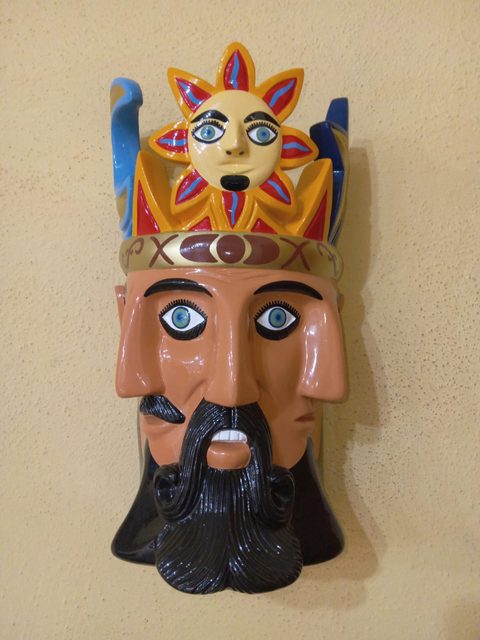
El maestro
Gorgonio Candelario Castro talla y pinta máscaras de madera en Suchitlán, pueblo del municipio de Comala, al pie de los volcanes de Colima. Es nieto de don Basilio e hijo de don Herminio Candelario Dolores, mascarero reconocido dentro y fuera de Colima y nombrado Gran Maestro del Arte Popular.
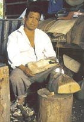
Antes de aprender a tallar, aprendió a observar. De niño miraba cómo las manos de su padre sacaban de un pedazo de madera animales, diablos y rostros. Así empezó: mirando, intentando y volviendo a intentar.
Pero don Herminio le enseñó algo que iba más allá de las herramientas: para hacer máscaras, primero hay que danzar. Hay que sentir la tradición, conocer a los personajes y entender la alegría de darles vida. Don Gorgonio heredó de su padre el talento y, de él y de su abuelo, la pasión por las danzas y ceremonias de su comunidad.
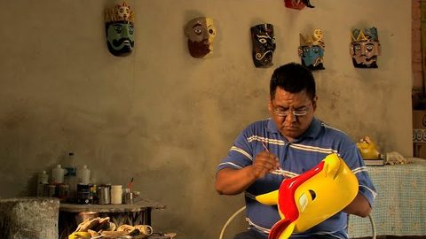
Don Herminio enseñó a sus hijos una manera de trabajar y, sobre todo, el respeto por un oficio que había recibido de las generaciones anteriores. Don Gorgonio ha seguido ese camino y lo ha hecho suyo: conserva las formas y la esencia de las máscaras tradicionales, afina la talla, los acabados y los detalles y, a partir de los diseños de siempre, ha creado otros nuevos. Él lo llama «lo tradicional con innovación».
Talla los animales de la Danza de los Morenos, como el coyote y el chivo que la encabezan, el tecolote y el gallo. También talla El Tiempo, la máscara de tres rostros, y La Noche, la de dos. Hace además nahuales, diablos, pastores y ángeles de pastorela, y los siete pecados capitales.
Su hermano menor, José Guadalupe, también mascarero, organiza la Danza de los Morenos; don Gorgonio, el mayor, se concentra en las máscaras. Dos máscaras suyas de 1995 están en el Museum of International Folk Art de Santa Fe, Nuevo México, y su nombre figura en el directorio Grandes Maestros del Arte Popular Mexicano, 20 años, de Fomento Cultural Banamex.
«Cuando un hijo supera a su padre es cuando un padre se consagra».
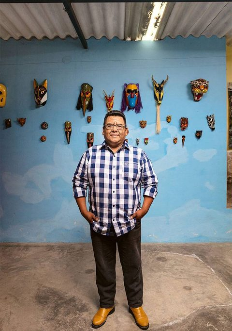
«Porque cada máscara pues tiene su... no sé, algún espíritu».
En Suchitlán, las máscaras forman parte de las danzas y fiestas que reúnen al pueblo. Los animales salen en la Danza de los Morenos; los diablos y los reyes, en las pastorelas.
Otras piezas encuentran su destino lejos de la danza, en las casas de quienes admiran la talla y la pintura. Don Gorgonio cuenta que muchos visitantes quieren saber primero quién hizo la máscara, cómo se hizo y qué historia representa, y solo después deciden llevarse una.
Tradición de Suchitlán
En Semana Santa, dieciocho danzantes con máscaras de animales recorren de madrugada las calles de Suchitlán al son de una vihuela. Es una tradición propia de este pueblo, y la familia Candelario la ha sostenido por generaciones.
Según José Guadalupe Candelario, hermano de don Gorgonio y ensayador de la cuadrilla, la danza representa la defensa que los animales hicieron del cuerpo de Jesús mientras estuvo en el sepulcro. Otra versión, difundida sobre todo fuera de Colima, cuenta que bailaban para distraer a los soldados romanos que custodiaban la tumba.
En Suchitlán se dice que las nueve parejas recuerdan los nueve meses de embarazo de la Virgen María y los nueve días del novenario de un difunto. Y se dice también que una máscara no está completa hasta que ha sido danzada.
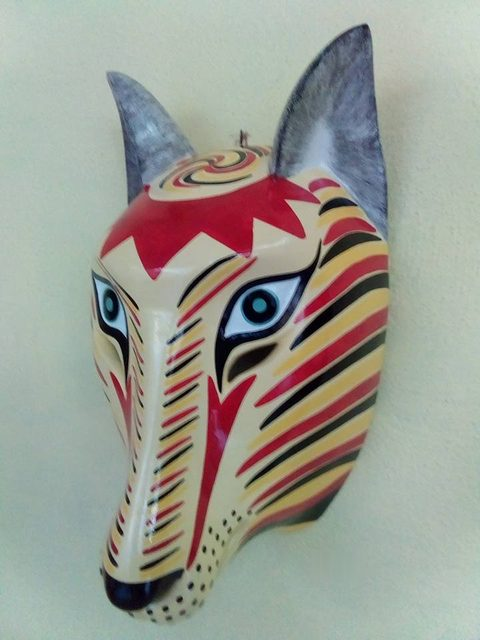
Como en el arca de Noé, los animales salen en parejas, macho y hembra. Según José Guadalupe Candelario, al frente van los capitanes, el coyote y el chivo, y detrás de ellos sus hembras, la coyota y la chiva. Antes, cuenta una investigadora de la Universidad de Colima, iba al frente el burro. Junto a cada pareja va lo que simboliza, cuando se conoce. Toca una foto para verla en grande.
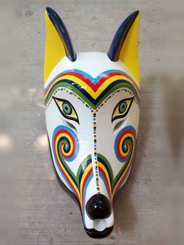
1CoyotesCapitán · la inteligencia
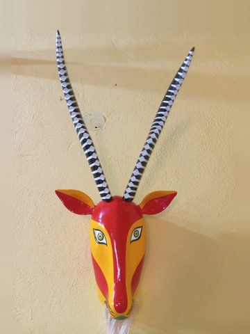
2ChivosCapitán · la unión y la fuerza
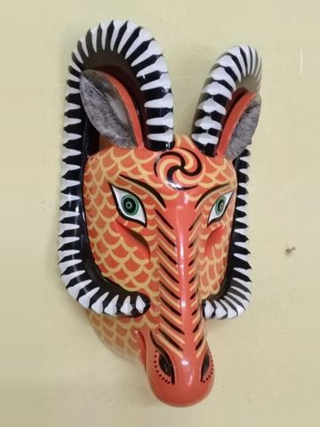
3Borregos cimarronesLa fuerza y la testarudez
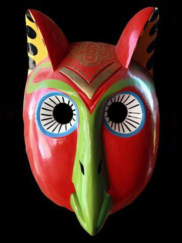
4TecolotesLa sabiduría
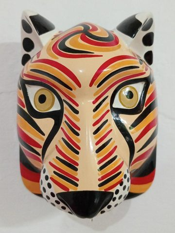
5Lince y oceloteLos felinos · la agilidad y la destreza
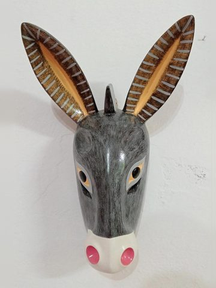
6Burros
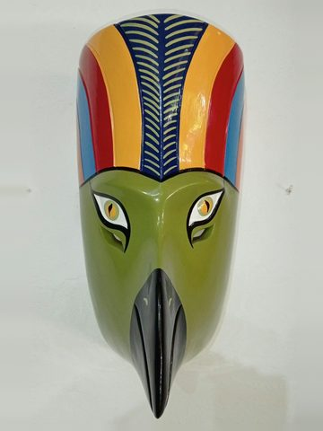
7Guacamayas
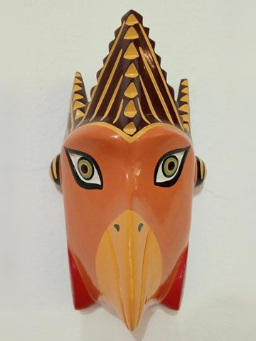
8Gallos
9Perros
El coyote de bigotes de arcoíris
Cuenta la familia que el abuelo y el padre de don Gorgonio crearon el coyote de bigotes de arcoíris después de ver a un coyote beber agua en un charco donde se reflejaba el arcoíris. Desde entonces, el capitán de la danza lleva en la cara las franjas de colores.
En Semana Santa comienza de madrugada. También se presenta por invitación.
A la cuadrilla la acompaña un vihuelero que toca sin máscara. Según la investigadora Isolda Rendón, de la Universidad de Colima, antes se tocaba con violín, y esa melodía se perdió. Hoy la vihuela la toca José Guadalupe.
Los danzantes visten un traje tosco de yute, con pantalón y blusón muy holgados y una capa hecha de costales de ixtle. Cada uno lleva una sonaja de bule pintada y un machete de madera o un bastón. Según la Universidad de Colima, la sonaja llevaba antes semillas, como petición de fertilidad, y hoy lleva piedras. Don Gorgonio también ha hecho machetes y sonajas para la danza.
Don Herminio, cuenta el periodista Esaú López, empezó a tallar máscaras para los Morenos a los nueve años. Sus hijos mantienen viva la danza: José Guadalupe la organiza y la enseña, y don Gorgonio se dedica a tallar máscaras.
En 2023, la Danza de los Morenos ilustró el billete de la Lotería Nacional que conmemoró los 500 años de la fundación de Colima. La cuadrilla se ha presentado también fuera de Suchitlán, como en el Encuentro Regional de Danza Centro Occidente, en el Jardín Libertad de Colima (2012), y en el festival Tonelhuayo. Está registrada en el Inventario del Patrimonio Cultural Inmaterial de la Secretaría de Cultura, con la información que aportó José Guadalupe Candelario.
Para saber más: INAH, «Danza de morenos: animales y religiosidad en Suchitlán» · Universidad de Colima · México Desconocido · Videos en YouTube: explicación de José Guadalupe Candelario y presentación en la Feria de Todos Santos de Colima.
La técnica
Cada máscara se talla a mano en madera, se pinta capa por capa y se termina con detalles minuciosos. Es la técnica de la familia Candelario y la especialidad con la que don Gorgonio figura en el directorio de los Grandes Maestros del Arte Popular Mexicano, de Fomento Cultural Banamex.
En el taller, todo empieza con un tronco. Don Gorgonio sabe reconocer lo que puede salir de cada pedazo de madera: uno corto puede convertirse en búho, gato o rostro humano; uno más largo y delgado, en coyote, zorro o gallo.
Después de escoger el tronco, don Gorgonio sigue con la talla, el socavado de la parte de atrás, el resanado, el lijado y la pintura. Cada paso pide paciencia, y cada línea de color, cada ojo y cada gesto le dan carácter al personaje.
La madera depende también del destino de la máscara:
Para las máscaras que se bailan: es una madera ligera, y el danzante puede llevar la máscara puesta durante la danza. Su hermano José Guadalupe la considera la principal y la llama también tzompantle.
Para las piezas de adorno. También se le llama papelillo.
Más dura que el colorín. En Suchitlán se usa para las piezas que deben resistir más.
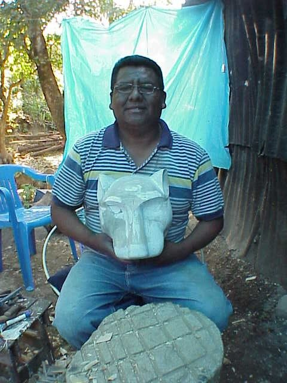
Así se hace una máscara en Suchitlán, según lo cuentan José Guadalupe Candelario, hermano de don Gorgonio y también mascarero, y la ficha de arte popular de la Secretaría de Cultura.
José Guadalupe cuenta que el árbol se prepara en luna llena: se le quita la corteza a metro y medio del suelo, se espera ocho días y se derriba sin tocar la raíz.
Se parte y secciona el tronco y se vacía la pieza por dentro. Con el angaro, herramienta de los mascareros de Suchitlán, se desbasta y se le da forma al rostro.
Con cuchillos de varios tamaños se afinan las facciones y se abren los ojos, la nariz y la boca. En las máscaras de colección, que no se bailan, los ojos y la boca a veces solo se pintan.
Se lija, se pule y se resanan las imperfecciones. Después se aplica una base de blanco de España que tapa el poro de la madera.
Sobre la base se dan varias manos de color y, al final, se pintan uno por uno los filetes, puntos, grecas y espirales. La máscara queda con un acabado brillante.
Algunas máscaras llevan fibra para el pelo o la barba. Los cuernos del borrego cimarrón se tallan en la misma pieza; los del chivo, más largos, se pegan y se clavan.
¿Cuánto tarda una máscara? A don Gorgonio le lleva unos diez días terminar una máscara.
Acercamientos a la talla y la policromía de don Gorgonio.
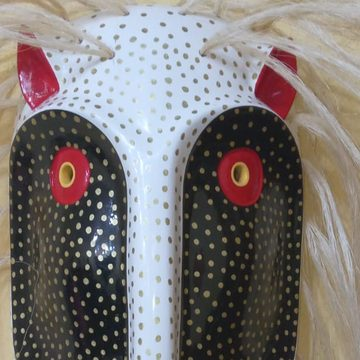
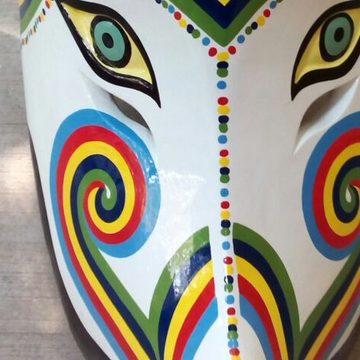
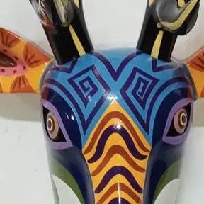
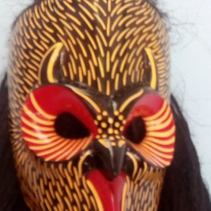
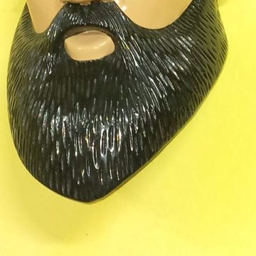
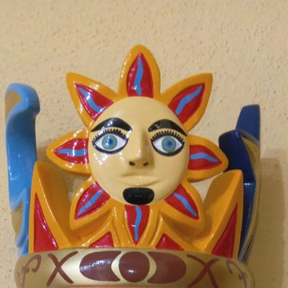
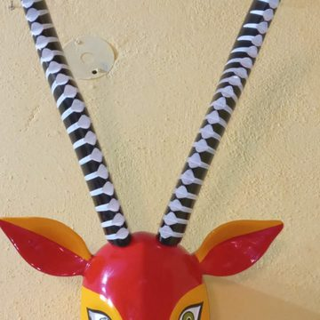
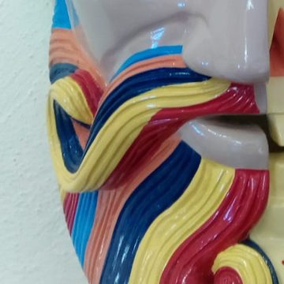
Su obra
Más de un centenar de máscaras talladas y pintadas a mano, ordenadas en salas como en un museo: la Danza de los Morenos, El Tiempo y La Noche, nahuales, diablos y un bestiario completo.
Reconocimientos
Fomento Cultural Banamex
Figura en el directorio de Grandes Maestros del Arte Popular Mexicano, 20 años (Fomento Cultural Banamex, 2019), con la especialidad de talla policromada.
Ver su fichaSanta Fe, Nuevo México
El museo conserva dos máscaras suyas de 1995: un tecolote de la Danza de los Morenos y El Tiempo, para la pastorela.
Ver la máscara del tecolote Ver la máscara «El Tiempo»La herencia
Su padre, don Herminio Candelario Dolores, fue nombrado Gran Maestro del Arte Popular. Su máscara El Padre Tiempo (1985) forma parte del acervo del Museo Franz Mayer, en la Ciudad de México.
Verla en Google Arts & CultureVideos
Suchitlán
El trabajo de don Gorgonio ha llegado a otros lugares de México y del extranjero, pero cada máscara nace en Suchitlán. Ahí están el taller, los recuerdos de su padre, las enseñanzas de su abuelo y las danzas que le dan sentido al oficio. De ese oficio de familia, don Gorgonio dice: «ya lo tenemos en la sangre tallar un tronco de madera».
«Dondequiera que vamos nosotros decimos que somos de Suchitlán, que somos hijos de Herminio Candelario».
Una máscara puede viajar muy lejos. Su historia siempre empieza en Suchitlán.
El taller
En su taller de Suchitlán, don Gorgonio recibe a quienes quieran conocer de cerca la talla policromada y llevarse una máscara hecha a mano. Antes de ir, escríbele por WhatsApp para confirmar que pueda recibirte.
Prensa